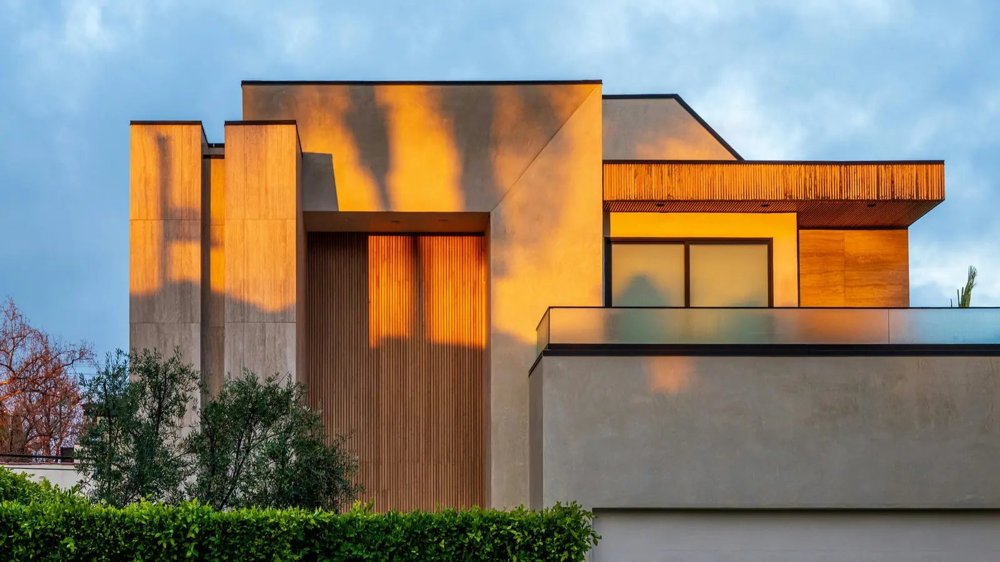

Vista
7.6 miles northwest

North County San Diego
What to know about San Marcos before you buy a home here.
Neighborhoods
The City of San Marcos names eight neighborhoods. Here is where they sit, from the northwest around to the south.
Northwest San Marcos
The northwest part of the city. Palomar College is here, and Santa Fe Hills is the neighborhood's largest planned development.
West-central, with Old California Restaurant Row on West San Marcos Boulevard and the Palomar College Sprinter station.
North and Northeast San Marcos
Rural, with greenhouses, estate homes on large lots and the Twin Oaks Valley golf course. More than half of it lies outside the city limits.
One of the first areas to develop, at the northeastern edge of the city. Nordahl Marketplace and Hollandia Park are here.
Central San Marcos
The smallest of the eight, north of Highway 78 and east of Twin Oaks Valley Road. City Hall and the Civic Center Sprinter station are here.
In the middle of the city, south of Highway 78. Cal State San Marcos is here, with apartments and condominiums near campus.
South San Marcos
The southernmost part of the city, with the Double Peak ridgeline and Double Peak Park.
A large specific plan area in the south, with a mixed use Main Street and a central square park.
In the central southwest. The eastern part, east of Rancho Santa Fe Road, is outside city limits but inside the city's planning area.

Leticia's Picks
[Leticia: where she sends people for coffee, dinner and a walk.]
Living Here
The places people in San Marcos go on a weekend.
Views across North County from the ridgeline, with a summit trail, an amphitheater and a picnic shelter.
Walking trails, birdwatching and catch-and-release fishing.
A privately owned lake with paddleboarding, fishing and boat rentals.
A historic barn with hands-on nature exhibits, plus trails, gardens and the pond.
The city's bike park on Linda Vista Drive, open Tuesday through Sunday.
The city lists 72 miles of trails and runs guided hikes and a ranger program.
Public planetarium shows and telescope viewing on campus.
Campus events, music and stage performances on Twin Oaks Valley Road.
Shopping and Dining
The walkable mixed use district on North City Drive, with shops, restaurants and a brewery.
Held in North City on Friday evenings, 4 to 8 p.m.
A 10,000 square foot mall with more than 60 antique and vintage booths.
Sells produce grown in the Golden Door spa's gardens.
One of the city's named shopping centers, in the Business/Industrial District.
A large shopping center in Richland, along Highway 78 near East Mission Road.
Seafood grilled over mesquite, open since 1979, with a fish market.
Neapolitan pizza and pasta in North City.
Italian food on Lake San Marcos.
American food with bowling, arcade games and live music in North City.
Breakfast, lunch and dinner at the Lakehouse Resort.
Italian dishes such as osso buco and short rib pasta.
Named by the San Diego Magazine San Marcos guide and Visit San Diego.
Schools
Two school districts serve San Marcos, and the address decides which one. Confirm with the district before you buy.
Serves nearly all of the city, kindergarten to grade 12. Find your school.
The middle and high school district for a small part of the city, grades 7 to 12. District site.
The Commute
Three Sprinter stations, Highway 78 east and west, and McClellan-Palomar Airport just outside the city.
1142 W. Armorlite Drive.
40 W. San Marcos Boulevard.
410 La Moree Road.
Road miles from San Marcos City Hall, without traffic.
Before You Buy
Check these on any home before you write an offer.
01
The City runs several Community Facilities Districts (Mello-Roos), including Paloma/Santa Fe Hills, Twin Oaks Valley Ranch and San Elijo Hills. Look for CFD lines on the property tax bill, and see the City's list.
02
Part of Lake San Marcos and more than half of Twin Oaks Valley lie outside city limits, so the county handles them. Ask which jurisdiction an address is in.
03
Look up the address in CAL FIRE's hazard severity zones and FEMA's flood maps.
04
Vallecitos Water District serves most of the city, and Vista Irrigation District serves parts. Both depend on the address.

Your San Marcos Agent
Tell Leticia which San Marcos neighborhoods you are weighing, and she will go through each one with you.
City services, planning and parks
Places to go and eat in San Marcos
San Marcos Chamber of Commerce
Local businesses and events
Property records and tax information
Nearby